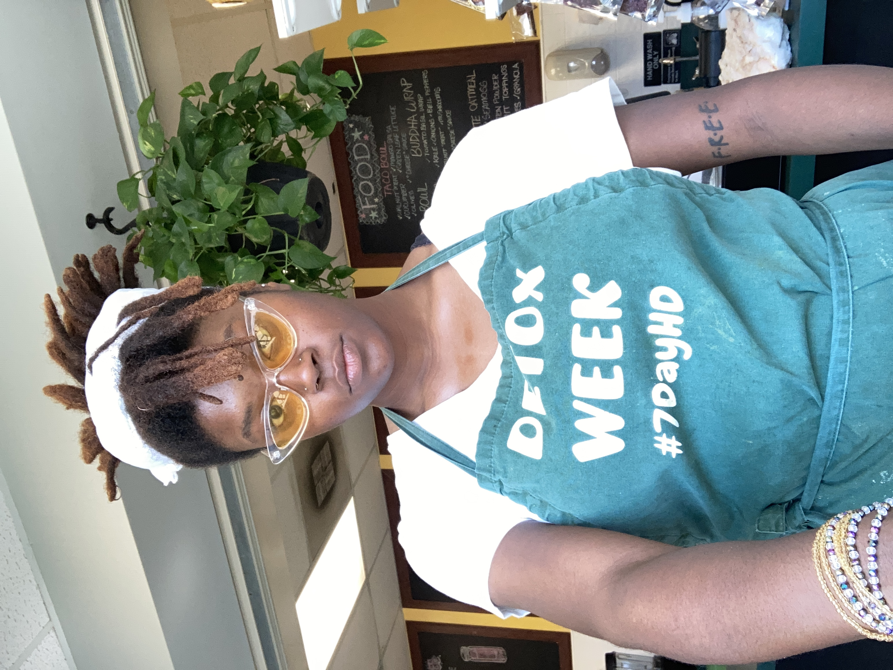

About Me
Jessica White is an innovative, dynamic, and ambitious young woman. Hailing from Harvey, Illinois,
Ms. White has traveled to China (age 14) and Peru (age 18). After earning her Bachelor's Degree in
Politics and Government from Illinois State University, she quickly realized that she did not
explore all of her passions. Jessica has always been intrigued by the fields of S.T.E.M., and even
had a few short-lived opportunities that surrounded it.
Her hobbies include reading books, writing, going on adventures and watching captivating
documentaries. She plans on writing fictional books with a focus on S.T.E.M. and the "supernatural".
Gaining this new skill will allow her to further her life's mission which is to be of service to her
community.